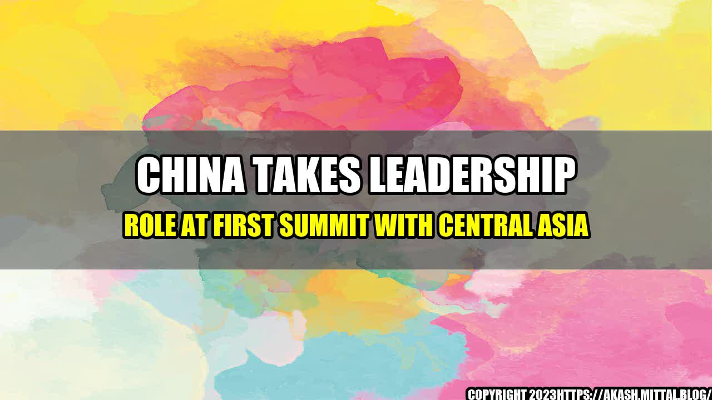

The Rise of China in Central Asia

Picture this: A dusty highway in the middle of the Tian Shan mountains, a group of Chinese trucks with Mandarin lettering driving by, followed by a group of Kazakh militants in jeeps decked out with Soviet-era weapons. This scene, which was a common sight in the early 1990s, is now a thing of the past.
Increasingly, the highways of Central Asia are filled with Chinese merchants and goods - from construction materials to smartphones - while Kazakhstani, Uzbek and Kyrgyz trucks can be seen crossing the western borders of China. This transformation has redefined the economic landscape of the region, and as China asserts its leadership role, the geopolitical one as well.
China's Leadership Role
At the first China-Central Asia Summit held in June 2021, China showed its leadership in many ways:
- Investment: China has invested more than USD $180 billion in the region since 2005, with the largest investment projects being in Kazakhstan. Chinese companies have been building infrastructure, such as roads, railways, and pipelines, as well as investing in Kazakh oil and gas fields.
- Trade: China has become the largest trade partner of Central Asian countries, accounting for 20% of their total trade. This trade is dominated by energy resources, but is gradually diversifying to other sectors, such as agriculture and high-tech.
- Security: China has established a military base in Djibouti, and is actively training Central Asian troops in counter-terrorism and border management. China is also involved in the Shanghai Cooperation Organization, which aims to promote security and economic cooperation in Central Asia.
These examples demonstrate the broad scope of China's influence in Central Asia, which extends beyond purely economic factors to include security and political relationships.
Challenges and Opportunities
However, China's increasing influence in Central Asia is not without challenges and concerns:
- Debt: Some Central Asian countries are taking on large amounts of debt in order to fund Chinese investment projects, which could put them in a precarious financial position.
- Labor: Chinese companies often bring in their own workers to complete projects, which can leave local labor markets out of the loop.
- Competition: Russian and American influence in the region is still a factor, and some are concerned that China's growing power could create an imbalance of power and influence.
Despite these concerns, there are also many opportunities for continued cooperation between China and Central Asia. By working together, the two regions can benefit from shared infrastructure, expanded trade relations, and improved security cooperation.
Conclusion
In conclusion, China is asserting its leadership role in Central Asia in a variety of ways. While this shift has brought about challenges and concerns, there are also many opportunities for continued cooperation. As China and Central Asia continue to work together, we can expect to see further economic and geopolitical changes in the region.
- Investment and trade between China and Central Asia is growing at a rapid pace, with China now the largest trade partner of Central Asian countries.
- China is also involved in security cooperation with Central Asian countries, through the establishment of a military base in Djibouti and participation in the Shanghai Cooperation Organization.
- While there are challenges and concerns associated with China's growing influence, there are also opportunities for continued cooperation and shared prosperity.
References
Hashtags
- #ChinaCentralAsiaSummit
- #ChinaInvestment
- #CentralAsiaTrade
- #ShanghaiCooperationOrganization
- #NewSilkRoad
Category
Economics, Politics, Foreign Relations
Curated by Team Akash.Mittal.Blog
Share on Twitter Share on LinkedIn